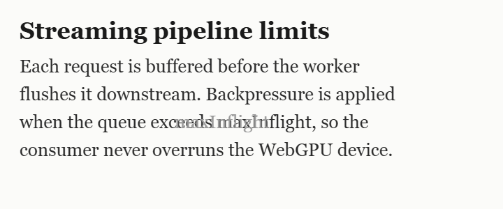

Select any region of a page — a code block, a paragraph, a formula, a table — and OCR Buddy reads it locally. It shows you the source, flags what it isn't sure about, and never sends a pixel to a server.
Each request is buffered before the worker flushes it downstream. Backpressure is applied when the queue exceeds maxInflight, so the consumer never overruns the WebGPU device.
Tuning these limits is the difference between a smooth stream and a stalled one…
Source · captured region

Extracted text
Big vision-language models top the benchmarks — then invent fluent, plausible, wrong text the moment the pixels get unclear. For code, numbers, IDs or prices, a confidently-wrong transcription is worse than none. OCR Buddy makes the opposite bet.
Hallucination here is architectural — not a bug you can prompt away.
In-browser and no-hallucination aren't a tradeoff — both constraints select the same stack: PP-OCRv5 on ONNX Runtime Web.
A region, the viewport, or a whole scrolling page hands a clean crop to a warm OCR engine running in an offscreen worker — coordinated, never uploaded. Or skip OCR entirely and export the page as Markdown.
Drag a region, grab the whole viewport in one click, or scroll-capture an entire page. The overlay is passive — it never reads page content.
A composited screenshot is cropped on an offscreen canvas — even from a paused cross-origin video.
PP-OCRv5 runs on ONNX Runtime Web — WebGPU when available, multi-threaded WASM as fallback.
The crop sits beside the text; low-confidence words are flagged. Edit, then copy.
And change your mind after capturing — the “Read as” switcher re-runs a different mode on the same crop, no re-selecting.
Inter-word spacing and blank lines are reconstructed from box geometry — the recognizer emits no space token, so layout is rebuilt, not guessed. A Code view restores indentation and syntax-highlights it.
while (queue.length > maxInflight) { const chunk = queue.shift(); device.submit(chunk); }
The one place a generative model is unavoidable — so the guardrail is visual. The LaTeX is rendered with KaTeX right beside the source crop; if it can't render, OCR Buddy abstains and shows the image.
Rebuilt by pure geometry from the word boxes — rows by vertical position, columns from an x-coverage profile. Because it keys off alignment, not ruled lines, it handles borderless tables too.
| Model | Size | License |
|---|---|---|
| PP-OCRv5 det | 4.7 MB | Apache-2.0 |
| Latin rec | 8 MB | Apache-2.0 |
Anti-hallucination isn't a tagline — it's the feature set. The captured crop sits right above the extracted text, the cheapest possible check. If the model isn't confident about a word, it says so instead of guessing.
Source · captured region
A full page-layout “Document mode” and a heavyweight formula library both shipped, then were removed on purpose: layout models need a whole page of context and misread single crops, and the library corrupted the formula decode. Keeping them out is part of the design.
4o0 → 400Extracted text
function flush(queue, maxInflight) { // backpressure: never overrun the device while (queue.length > maxInflight) { const chunk = queue.shift(); device.submit(chunk); } return queue.length; }
Measured with the exact PP-OCRv5 config the extension ships, against ground truth on real academic pages.
Sentences, citations like [22] and tokens like RoPE-2D, all correct.
That's reading-order interleaving, not misrecognition — the characters are right, the order isn't. Select one region to restore it.
Use Formula and Table modes for those — Text/Code mode flattens them. No “100% OCR of anything” claims here.
There is no server. The OCR models are bundled in the extension and run in an offscreen worker, so even first-run inference is fully offline. The only network use is downloading the extension itself — and, only if you explicitly pick a non-Latin language pack, a one-time model download that's cached locally (no page content or image ever rides along).
All models ship inside the extension and run on-device. Permissive licenses throughout — no copyleft anywhere in the stack.
| Model | Role | License |
|---|---|---|
PP-OCRv5 mobile det · ~4.7 MB | Text detection | Apache-2.0 |
latin PP-OCRv5 rec · ~8 MB | Latin text recognition (CTC) | Apache-2.0 |
mfr_encoder / decoder · ~53 MB | Formula → LaTeX (pix2text-mfr) | MIT |
| Language packs · ~8–17 MB each | On-demand recognition: zh+ja, Cyrillic, East Slavic, Greek, Korean, Thai, Devanagari, Tamil, Telugu — downloaded once, cached locally | Apache-2.0 |
No. There's no server and no API calls. The OCR models are bundled in the extension and run entirely on your device — even the first run is fully offline. The only network use is downloading the extension itself — and, only if you explicitly pick a non-Latin language pack, a one-time model download that's cached locally. No page content or image ever rides along.
Yes — free and open source under the MIT license. No account, no subscription, no telemetry.
Generative models predict the next likely token, so when the image is unclear they invent fluent but wrong text. OCR Buddy uses classic detection + CTC recognition, which transcribes the glyphs that are present and fails to blanks instead of fabricating a sentence.
Plain text and code (including code in a paused video or a PDF), single equations converted to LaTeX, and single tables converted to a Markdown grid — borderless tables included. Capture a region, the whole viewport in one click, or scroll-capture an entire page. It even reads coloured text on light backgrounds, like red error messages or blue links. Latin scripts are built in; on-demand packs add Chinese, Japanese, Cyrillic, East Slavic, Greek, Korean, Thai, Devanagari, Tamil and Telugu. You can also OCR any image directly — open, paste, drag-drop, or right-click it on a page.
Yes. Page → Markdown turns the current page into clean Markdown built from its own structure — headings, lists, links, tables, code blocks — not from OCR, so it's faithful and ready to paste into an LLM. You get a preview to copy or download as a .md file, and it runs entirely on your device.
Yes. The bundled models ship inside the extension, so the default Latin experience works with no network connection at all. Optional non-Latin language packs download once when you select them and are cached locally — offline from then on.
Chrome 124 or newer (WebGPU in workers). On devices without WebGPU it falls back to multi-threaded WebAssembly with identical results.
Add OCR Buddy to Chrome and pull clean text off any screen in seconds.
Add to Chrome — free